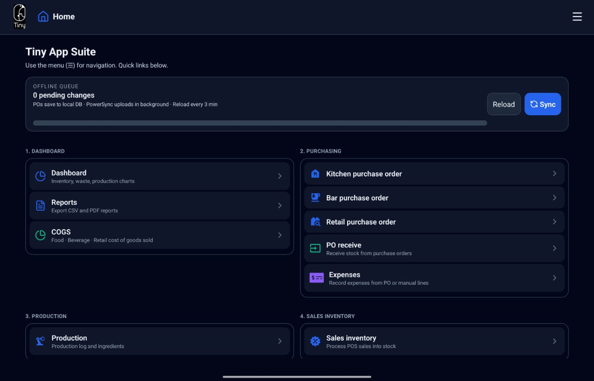
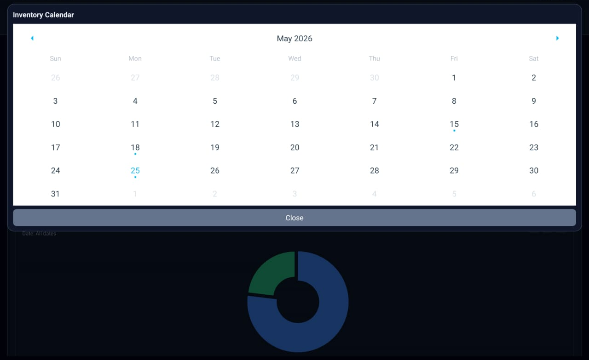
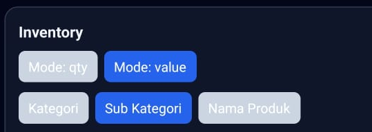
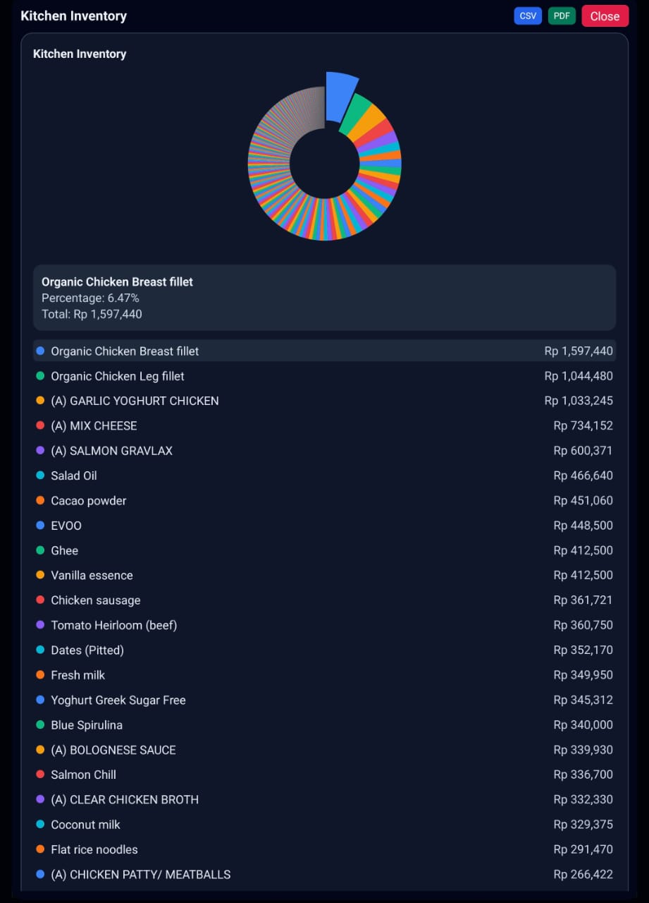
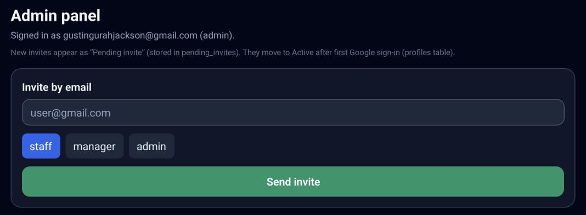
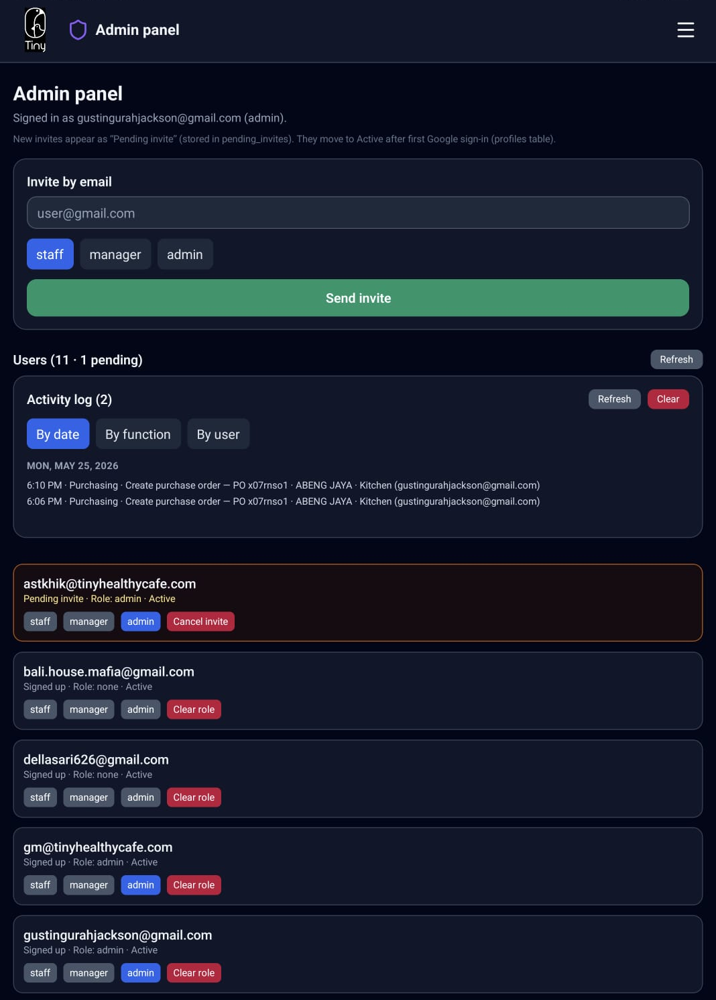

Operations Manual
Step-by-step guide for Tiny App Suite on tablet (APK). Covers every module from sign-in through settings. Optimized for Tiny Healthy Family Cafe staff and managers.
Reload & Sync
Most data screens show a sync bar at the top. Use it throughout your shift so data stays current and your entries reach the server.
- Reload — download the latest data from the server.
- Sync — upload pending changes from this device.
- Pending count — unsynced items; aim for 0 before end of shift.

Navigation
- Top bar — Tiny logo (tap → Home), screen title, menu ☰.
- Menu — sections 1–6 plus Master data, Admin panel, App settings (by role).
- Large tablet (landscape) — side panel may stay open; use minimize to collapse.

Sign in with Google
You must sign in before business data appears. Use the Google account that matches your admin invite.
How to sign in (tablet)
- Open the app on the tablet.
- Tap Continue with Google.
- Choose the invited Google account.
- Complete sign-in if a browser opens.
- Wait until Finishing sign-in… clears.
- You should land on Home.
Sign-in walkthrough


Home
Home is an overview of every module. It links to Dashboard, Purchasing, Production, Inventory, Waste, and Settings, and provides global Reload / Sync.
Section cards
- 1. Dashboard — Dashboard, Reports, COGS
- 2. Purchasing — PO (Kitchen/Bar/Retail), PO receive, Expenses
- 3. Production
- 4. Sales inventory (manager/admin)
- 5. Inventory — opname, approval, on hand, movements, warnings
- 6. Waste — Kitchen / Bar / Retail
- Settings & admin — Master data, Admin panel, App settings
- At shift start, tap Reload, then Sync if pending > 0.
- Tap the module you need.
- Optional: Show full menu for the complete nav list on one page.


Dashboard
Visual analytics: inventory, production, and waste pie charts. Pick dates and filters; open fullscreen; export CSV/PDF where allowed.
Inventory
Inventory Calendar — All or pick a single date. Inventory charts (Kitchen, Bar, Retail):
| Control | Options |
|---|---|
| Mode | qty or value (Rupiah) |
| Group by | Kategori · Sub Kategori · Nama Produk |
- Open Dashboard.
- Set Inventory Calendar (All or date).
- Choose Mode: qty or value.
- Tap Kategori, Sub Kategori, or Nama Produk.
- Tap a chart for fullscreen; export from the card if available.
Dashboard — Inventory charts





Production (on Dashboard)
Production Calendar — Single Day or Date Range. Charts: Products qty/value, Ingredients qty/value.

Waste (on Dashboard)
Same filters as inventory: Waste Calendar, Mode qty/value, group by category — Kitchen / Bar / Retail waste pies.

Sales & COGS (on Dashboard)

Reports
Export tables (not charts). Choose a report type, then a date or range, then export.
| Report | Date |
|---|---|
| inventory totals | Single on-hand date |
| waste, movements, production summary/detail, purchase orders | Date range |
| sales | Range + group by — manager/admin |
Export: CSV and Excel (all with access); PDF and Share PDF (manager/admin).
- Open Reports and tap a report chip.
- Pick single date or start/end range on the calendar.
- For sales, set group by product / category / subcategory.
- Confirm row count, then export.
Reports — export flow


COGS calculator
Cost of goods sold for Food, Beverage, or Retail between opening and closing on-hand dates.
- Open COGS from Home or menu.
- Set Opening and Closing dates.
- Select segment tab.
- Review the calculation table; Reload if stale.


Purchase order (Kitchen · Bar · Retail)
Same screen for all sections; products and budget differ. Create POs, scan barcodes on tablet, export PDF for suppliers.
Section & budget
- Tap Kitchen, Bar, or Retail (clears unsaved lines).
- Kitchen/Bar: review PO budget (monthly cap, today remaining).
Supplier, header, products, save
- Choose supplier from search list.
- Fill header: Purchase Date, Branch, Required Date, optional notes.
- Add lines: scan barcode (tablet) or product search; set qty, discounts, VAT.
- Tap Create purchase order; then Sync.
- Recent POs: Edit, Export PDF, Share PDF.
Purchase order — full workflow


PO receive
Receive today’s purchase orders into inventory. Edit qty and unit price before posting.
- Open PO receive; select section.
- Expand a PO sequence.
- Select lines; adjust qty/price if needed.
- Receive selected or Receive all.
- Sync; verify Stock on hand / Stock movement.


Expenses
Record expenses manually or from received POs. PO lines do not add stock again.
- Pick section; set contact and chart of accounts.
- Add manual lines or import from received PO.
- Review staged list; Save; Sync.

Production
Log runs from BOM: form, production log (Planned / Completed today), ingredient recipe table.
- Search BOM product; set target amount; Planned or Completed.
- Tap + Add production log.
- Select run in log; view ingredients; Complete / Delete as needed.
- Sync after changes.
Production — step by step


Sales inventory
- Reload sales data.
- Filter by date or view all pending.
- Select lines; Process selected or Process all.
- Sync; check Warning log for unmapped menus.

Stock opname (Kitchen · Bar · Retail)
Physical count per section. On-hand updates only after manager approval.
- Open section opname; Reload if products empty.
- Scan or search product; enter counted qty; Add count line.
- Submit for approval when complete; Sync regularly.
Stock opname — count workflow


Opname approval
- Select section; optional date filter.
- Expand session; edit qty if needed.
- Approve or Reject; Sync; export CSV/PDF if needed.

Stock on hand
Read-only balances by section. Search to filter products.

Stock movement
Ledger of ins/outs. Filter Kitchen / Bar / Retail / All; search product, type, or reference.

Warning log
Device-local warnings (unmapped sales, negative stock, etc.). Clear after review.

Waste (Kitchen · Bar · Retail)
Record today’s waste per section. Reduces stock on sync.


Master data
Sections: All Product, Purchase Products, BOM, Supplier List, Chart of Accounts, PO Budget.


Admin panel
Invite users, assign roles, view activity log.


App settings
Account (email, role, sign out) and Appearance (Light / Dark / System).


Appendix
Role summary
| Feature | staff | manager | admin |
|---|---|---|---|
| Stock opname entry | ✓ | ✓ | ✓ |
| Approve opname | ✓ | ✓ | |
| Create PO | ✓ | ✓ | ✓ |
| PO receive / Expenses | ✓ | ✓ | |
| Sales process / COGS | ✓ | ✓ | |
| Reports PDF | ✓ | ✓ | |
| Master data / Admin | ✓ |
Web vs tablet
| Screen | Tablet | Web |
|---|---|---|
| PO / opname / waste barcode | ✓ | Search only |
| Share PDF | Share sheet | Download |
Image filenames
Drop PNG screenshots into images/ using the filenames referenced in this page (e.g.
login-01.png, po-barcode.png). Missing files show a styled placeholder until you add
them.